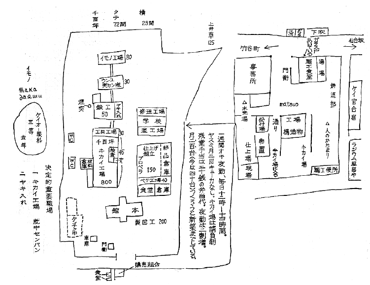
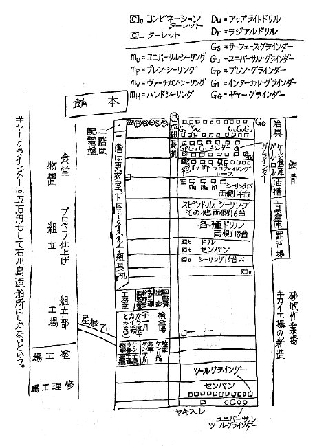

○長や 玉やの玉のブつかる音。小さい家から一日じゅうラジオか、やすチク音キがきこえる。窓からとび込んで来る猫。葬儀やの二階の講。台所にタライにビールをつけてある。ベコベコジャミセン
○物干しに出て、どじょうすくいを踊るのをこっちから見て（室内の連中が）居る。
「乃木節じゃ私ァ霞町一番だったんだ」から下手。「踊じゃ私がやっぱり師匠かな」夜、おかみさんが「お膳はあしたすっかりふいておかえししますよ、ねエ」云々。
東洋紡、伏見宮姫の見学。一円八十銭の作業服自弁、時間外に掃除。キレイにするコト。寄宿舎の南京虫をタイジしろ！
○鬼足袋工業株式会社、資本百万円、寺田淳平。
二百六十四名、主に少女工（十五歳未満）剣劇ファン
○職工と女工と別の出入口をもっているところもある。
○壁のわきのゴミ箱。○脱衣室のわきの三尺の大窓。
○あき地で塀なし。わきから通って、となりの工場へ行ける？
○三井品川工場 塩原文作。資本ケイ統住友 第一［＃「住友 第一」は枠囲み］
職工 社員 一五〇人位 月給 工場員、工手、雑工合計800
日給 〃 〃 女工600人
社員の中月給百円以上約五十名
品川工場 主として化学薬を製造
向島 ベークライト（不燃性セルロイド）タカジヤスターゼ
オートバイ（赤坂溜池で発売のハーレーダビッドソン）
亀戸 石ケン
大阪 原料、精製、両方
大連 アマニ油、酵母
未組織。減俸等してもさわがれるので
一、原料購入――重役直接の仕事、多大の利益がある由。職工は噂している。
一、消耗品購入、石炭など高いわるいものだそうだ。
一、勤務時間延長――守衛の。
守衛各門に一名。六七名（全部で一五、六人）
交代、正午、七時――七時 十二時間立つ。
〔欄外に〕
十銭講、
一銭 玉姫 七百名
救援会
東京府統計書 昭和五年度
東京府郡部における集団的不良
住宅地区状況調査
東京市不良住宅地区調査
十銭講、
一銭 玉姫 七百名
救援会
東京府統計書 昭和五年度
東京府郡部における集団的不良
住宅地区状況調査
東京市不良住宅地区調査
三井電機株式 二
ラジオセット ラッパ 医療キカイ
職場名
捲線部 二十歳以下のものが多い
ラッパ部 昇給最高 男15銭 最低4銭
試験部 女10銭
発送部 賞与盆暮に二日分
キカイ部
セット部 ラッパ／捲線［＃「ラッパ」と「捲線」は２列に並ぶ］――の自主的旅行会「テクロー会」
塗工部
修理部 御用スポーツ 各職場6チームあり
材料部
雑
ラッパから同人雑誌
東、中、電話局料金課 男一五〇
女二三〇
（一）［＃（一）は縦中横］ 徴収部（電話加入者十万人）
収計部
調査部 八時間制だが肺病事業
庶務部
朝 四月十月 八時―四時
十一月三月 九時
残業 三十分、一時間、二時間
夏七月二十日―八月三十一日まで十二時で終るが残業
給、日給最高 最低
男一、五〇 九〇銭
女一、三〇 七〇銭
三年以上、年功一円以上つく
平均一ヵ月収入
最高 最低
男四五、〇〇 男二七、〇〇
三九、〇〇 二一、〇〇
五銭四銭・昇級［＃この行は下に横組みで］
〔欄外に〕
男、女とも形式試ケンで知人カンケイをとる
全国 ／早出
無手当＼残業
「同好」同好会キカン誌
男、女とも形式試ケンで知人カンケイをとる
全国 ／早出
無手当＼残業
「同好」同好会キカン誌
農家の娘 自作 小学校を出て、すぐ稼がなければならないのだが、それではものにならぬと、むりして女学校を出て、上京、苦学して専門学校に入学、苦学をゆるさぬ、体面上（学校の）女だから――。体の無理がきいて来たのと、階級的にものを考えるようになって来たことから。
理由。 自分が女学校へゆき、専門学校に入ったために一家離散し、その日その日を稼いで食っている。上京のとき県の学資金をホ助して貰おうとしたら女だというのと、専門の関係から金が入らないという理由で拒絶され
学校の寄宿舎では一年の時、畳を友達が一寸四方ヤイタというので舎監が一部屋八畳のタタミ代二十四円のバッ金をかせた。それをキッカケにすとらいきみたいなことをやった。私は最も重い刑、三日間の絶食と一週間のキンシンをくう。一ヵ月もたたないうちに二週間のキンシンと二ヵ月の外出キンシ。舎カンの目をとおさずに展ラン会へ出品した事。学校当局は何も知らぬ自分を赤だと云われ、それからはじめて赤い本をよむようになった。自分は貧乏人のクセに絵なんぞ書いてるのはモッタイないと思っていると資金がきれ退学。学内に組織はなかった。昭和六年九月（退学後）芝浦の××印刷工場（三百人）に日給一円コウセイヤとしてかよう。当工場にアナ系（自由レンゴー）の組織があって不当カイコに対して専務をテロッて病気させた。加って、二三ヵ月でクビ。失業（十一月ヤップ加盟）
七年一月 板橋 Ｎ食糧工場の加工部。三十銭。中で休ケイ時間要求、賃銀五銭ね上げ 三四回つづけて全員を最低四十五銭、最高七十銭―八十銭に上げる。
［＃ここから罫仕切り、----で挾まれた部分が一つの仕切り内］
工場の一部に寺田社長住んでいる［＃この行は枠の上に横書き］
鬼タビ 二二五 女一八三
陸軍指定工場 男 四二
｛裁断
1．足袋部｛場内（コール天足袋）
｛社交（白タビ）［＃３つの「｛」は１つに繋がる］
2．洋服部
3．出荷発送
4．事ム所
初日給 三五銭
出来高故 夏8.90 平均
│ │
冬15. 25.
三十円以上のは二三人
男工、最低 五〇
最高 一、五〇
臨時日給七〇―一、〇〇
夏春はスゴイ操短、冬強化一ヵ月五千足
休日 第一、第三日曜
正月 三日
盆 二日間
休ケイ時間
朝 一〇時、三時十五分ずつ
正午 四〇分
食堂 男女別
ジム員のは 別製
湯はあるがチャワンなし。
テニスコートは事ム員の独占、バスケットボール、ピンポンをやる。
洗面所一ヵ所ギリ
昭和二年 K.P.［＃「K.P.」は縦中横］ と評議会で大ストをやった。
［＃ここで罫仕切り終わり］
新聞配達
朝夕で 二十五円 平均
維持料 級増料
拡張員
店は まかない 十円―十五円でもうける。
××製作所2596人［＃「2596人」は縦中横］職工だけ。女三六五人
○健康ホケン費 七五、一二八・四円。一ヵ年間にこの七万五千余円がホケン組合に入る。一人当り一ヵ年二八円九四銭
第十二工場 製カン、鋳物、ガス溶接屋 二〇九名
第八工場 変圧器製造 六五〇名
第七工場 直流、交流発電キ 電キ機関車 五〇〇
第五工場 小型モーター セン風機 家庭器具 四五〇
第十一工場 製図、営繕


十二工場（通称十二番）が最も戦闘的であって、ストのトップを切る。田清、時代、そしきがここにあった。
八番 東京工場からまわった連中でアナ、総同盟に属していた職工が多い。
全工場中待遇は最悪。それでも立たず。
七番 十五年二十年の勤続、熟練工が多い。
（大キカイ故）中々まとめ難い。
○五工 は家庭器具で一 二 三階とも工人密集して働き、年が若く、女が多い。現在1割「××モーター」（単独の五工従業員組合――五工分区）三百名ほどまとまり、十銭の会費完納。一部でヒ行器のエンジン。──────────────────────────────────
◎各工場の建物分離。はじからはじまで三十分もかかる。工場のドアをしめきると、各工場分り出来る。ふだん、他職場へゆくこと禁止。